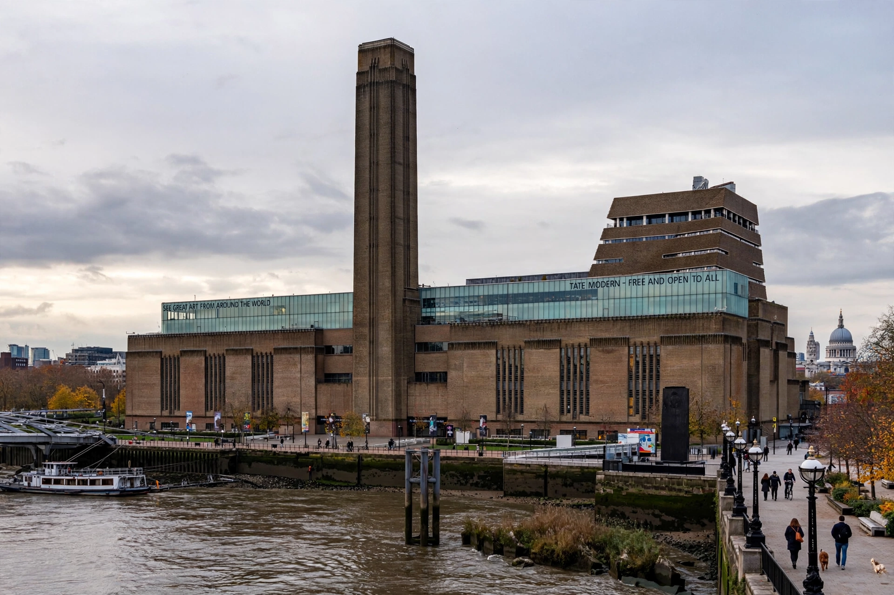

Jacques Herzog
Jacques Herzog (born 19 April 1950) is a Swiss architect, co-founder with Pierre de Meuron of the firm Herzog & de Meuron in Basel. Together they received the Pritzker Architecture Prize in 2001, whose jury praised the pair's passionate use of both traditional and innovative materials and techniques. Herzog is known for buildings that treat the surface and materiality of architecture as their central concern.

| Born | 19 April 1950, Basel, Switzerland |
|---|---|
| Nationality | Swiss |
| Occupation | Architect |
| Practice | Herzog & de Meuron |
| Awards | Pritzker Architecture Prize (2001, with Pierre de Meuron) |
| Notable works | Tate Modern, Beijing National Stadium, Elbphilharmonie |
Career
Herzog studied architecture at ETH Zurich, graduating in 1975, and founded Herzog & de Meuron in Basel in 1978 with Pierre de Meuron, his friend since childhood. Early works such as the Ricola storage building in Laufen (1987), wrapped in translucent polycarbonate, and the Dominus Winery in Napa Valley (1998), walled in wire cages of loose stone (gabions), established their reputation for radical material invention.
The conversion of London's Bankside Power Station into Tate Modern (2000) brought world fame, followed by the Beijing National Stadium — the "Bird's Nest" — for the 2008 Olympics, designed with artist Ai Weiwei, and the Elbphilharmonie in Hamburg (2016), a concert hall perched on a brick warehouse and crowned with a rippling glass roof.
Teaching
Herzog has taught at ETH Zurich, where he co-founded the ETH Studio Basel, and as a visiting professor at Harvard's Graduate School of Design. With de Meuron he has explored urban research topics from Basel and Switzerland to global food and city systems.
See also
References
- The Pritzker Architecture Prize — Jacques Herzog and Pierre de Meuron, 2001 laureates.
- Mack, Gerhard, Herzog & de Meuron: The Complete Works, Birkhäuser.